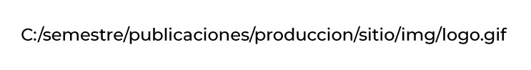

Contenido 2D
"Diseño no es lo que ves, sino lo que debes hacer que otras personas vean."
– Edgar Degas
"Si -todo- esta en negrita, nada lo está."
– Art Webb
Generalidades y conceptos
- ¿Qué es una URL?
- Estructura de un sitio web
- Algunas herramientas
¿Qué es una URL?
La URL es la dirección específica que se asigna a cada uno de los recursos disponibles en la red con la finalidad de que estos puedan ser localizados o identificados.
Hay un URL para cada uno de los recursos (páginas, archivos, carpetas) que hay en la World Wide Web.
El URL sirve para que podamos encontrar aquello que estamos buscando en la red: una página, un sitio, un archivo, un documento, etc.
fuente: significados.comURL o ruta absoluta: Incluyen todas las partes de la URL (protocolo, servidor y ruta) por lo que no se necesita más información para obtener el recurso enlazado.
URL o ruta relativa: Prescinden de algunas partes de las URL para hacerlas más breves.
fuente: concepto de y uniwebsidadEstructura de un documento web
Ruta Absoluta
Teniendo en cuanta la estructura de archivos del ejemplo anterior, cuando se ubica un recurso desde la raíz del disco, se debe especificar todo el recorrido hasta llegar a él.
Ruta Absoluta
El recorrido realizado para encontrar el recurso, se indica por medio de los números.
Ruta Relativa
La ruta relativa, se calcula con base a una ubicación actual, para este caso se usa la carpeta sitio, esto facilitará subir la estructura de carpetas a un servidor y no habran problemas de rutas.
Herramientas
Los siguientes programas y páginas web nos permiten ser más rápidos, eficientes y efectivos para la creación de contenido digital.
Capturas de pantalla
Tomar una captura se puede hacer de manera nativa en cualquier sistema operativo, siendo la mejor funcionalidad la de Machintosh.
Hay necesidades específicas a la hora de tomar una captura que la mayoría de estas aplicaciones no soporta, por tanto se recomienda usar una herramienta extra.
Capturas de pantalla
LightShot
Tablero en vivo
Tener la posibilidad de rayar una explicación, similar a como se hace con una pizarra, es muy necesario, para evitar a que el alumno se imagine la situación.
Por tanto, es mejor dibujarla üòä
Sketchbook
Sketchbook
Imágenes intuitivas
Es muy importante usar recursos con los cuales los estudiantes se sienten familiarizados, por ejemplo: podemos usar emojis para explicar situaciones de clase.
Imágenes intuitivas
Emojipedia
Íconos
Los íconos son útiles para personalizar imágenes, crear infográficos, hacer comparaciones, acompañar textos y marcar acentos.
Repositorio con recursos gratuitos
The noun project
Use animaciones en formato GIF
El gif es un archivo liviano y con mucha variedad de contenido.
Giphy - Repositorio de GIFsFormatos de imágenes
Usar el tipo de imagen correcto, según la información gráfica que se necesita visualizar es clave para una buena experiencia de usuario. Los formatos usados para la web, utilizan un modelo de color RGB creado para pantallas de luz, con respecto a la resolución, depende de una relación entre peso y calidad del archivo.
JPEG Joint Photographic Experts Group
- Estandar de compresión y codificación de archivos e imágenes fijas creado en 1992
- El más usado en la web, pero no necesariamente es el mejor
- Se basa en dos fenómenos visuales del ojo humano: capta mejor cambios de brillo que de color
- Formato con pérdida acumulativa al comprimir, pero muy flexible a la hora de ajustar grado de compresión
- Conveniente para archivos que contengan grandes áreas de colores sólidos
PNG Portable Network Graphics
- Originalmente PNG era un acrónimo recursivo que significa que significa PNG no es GIF
- Desarrollado para solventar las deficiencias del formato GIF, permite almacenar imágenes con una mayor profundidad de contrastes y otros datos importantes
- Imagen para mapa de bits de hasta 24 bits
- Compresión sin pérdida 8bits - 24bits
- En imágenes con mapas de color continuas actúa mejor que JPEG
GIF Compuserve GIF
- Creado en 1987
- Formato de intercambio de datos de imagen para mapas de bits de hasta 256 color (8 bits) como máximo
- Muy buena calidad afinando bien el nivel de color y la compresión (si no, se granula)
- Soporta animación, varias pantallas dentro del mismo archivo y transparencia
- Ideal para imágenes pequeñas, animadas y de pocos colores, como los banners.
Principales usos GIF, PNG y JPG
SVG - Scalable Vector Graphics
Es un lenguaje de marcado XML para describir gráficos vectoriales en dos dimensiones. Básicamente, es a los gráficos lo que HTML es al texto.
SVG - Scalable Vector Graphics
Los gráficos SVG, son livianos, permiten representar una imágen por medio de fórmulas mátematicas llamadas primitivas (circulo, línea, cuadrado), es un formato compatible con programas de diseño como illustrator, affinity, sketch, figma, adobe xd.
Se usa para realizar patrones de fondo, íconos, logos. Funciona similar al formato de las tipografías.
fuente: MDN web docsFondos gratis
Herramientas para editar y optimizar imágenes
Optimizar los insumos gráficos es una tarea manual muy importante que debemos realizar, para que nuestros recursos carguen rápido y se vean bien.
Recomendaciones para el uso de imágenes
- Redimensionar las imágenes al tamaño en el cual apareceran en el recurso.
- Optimizar la imagen al formato adecuado y tamaños correctos, según el diseño.
- Cargue pocos recursos
- Puede cargar recursos usando una url
fuente: 5 steps to speed your images
Optimizar imágenes PNG
El formato png no soporta compresión, para poder optimizar este tipo de archivo es posible recurrir a herramientas en línea como tinypng.com este sitio permite bajar el peso del archivo de una manera muy simple, arrastrar, soltar y luego descargar.
Otras opciones compressor, pngquant y imagekit
Contenido
Audiovisual
"Cuando se cuenta una historia el cerebro del que la cuenta y el que escucha se sincronizan."
– Soy mi marca
Generalidades y conceptos
- Descargar videos de youtube
- Grabar la pantalla
- Editar video en el computador
- Incrustar video
Descargar Videos
Para descargar videos podemos usar múltiples métodos, por el momento con estos dos tendríamos lo básico:
- Descargar usando un sitio externo
- Cambiar un valor en la url de youtube
Descarga usando savefrom
Este método permite seleccionar la calidad y el tipo de archivo que se va a descargar, ideal como plan b para que el estudiante no dependa de internet para ver el video.
Savefrom
Descarga modificando url
Este m√©todo es más rápido, simplemente es cambiar un valor de la url. üòè Sin embargo los dos usan la misma herramienta.
Grabar la pantalla
Cuando necesitamos explicar ciertos procedimientos que requieren de varios pasos, lo ideal es grabar el proceso para que el estudiante lo pueda mirar con calma luego de la clase.
durante la clase todo puede suceder, el sitio o aplicación que se requiere explicar no carga o se demora en responder.
Grabando el proceso no tendremos este problema, adicionalmente es posible compartirlo y dedicar el tiempo del curso a otros contenidos.
OBS Studio
Con OBS, el cual es un software gratuito de captura de video, es posible capturar lo que hacemos en la pantalla del computador, esta disponible para diferentes S.O.
OBS Studio
LICEcap
La mejor forma de incluir una grabación de un procedimiento en la pantalla es crear una animación representado en un gif.
LICEcap
Animación resultado
Archivo GIF de 388KB, es liviando y además se puede incluir en una presentaci√≥n y no aumenta mucho el peso. üëÄ Debemos tener presente no incluir demasiadas animaciones en un mismo documento.
LICEcap
DaVinci Resolve
Es la única solución que combina herramientas para editar, componer efectos visuales, crear animaciones gráficas y mezclar audio en un solo programa. Su interfaz moderna es sumamente sencilla de usar, ideal para principiantes, pero también muy completa para profesionales.
DaVinci Resolve 17DaVinci Resolve
Lo mejor de este programa es que tiene una versión gratuita sin marca de agua y compatible con diferentes S.O.

Edita videos fácilmente
Recomendaciones para grabar videos
Cuando se graban videos con el celular, se recomienda seguir los siguientes tips.
Enlace externo
Se recomienda enlazar recursos para ser reproducidos directamente en las plataformas especializadas para tal fin, así liberamos espacio y mejoramos el tiempo de carga de la presentación
Incrustar el recurso
Se pueden embeber varios recursos, dependiendo de la aplicación de la plataforma que se use, sin embargo la mayoría de sitios tiene la opción de ember o incrusar usando código HTML múy sencillo.
Ejemplo de audio incrustado
Audio tomado de soundcloud, sitio similar a youtube donde se comparte audio, por ejemplo escuche el siguiente podcast:
Ejemplo video incrustado
Video de youtube para eliminar el fondo de una imagen